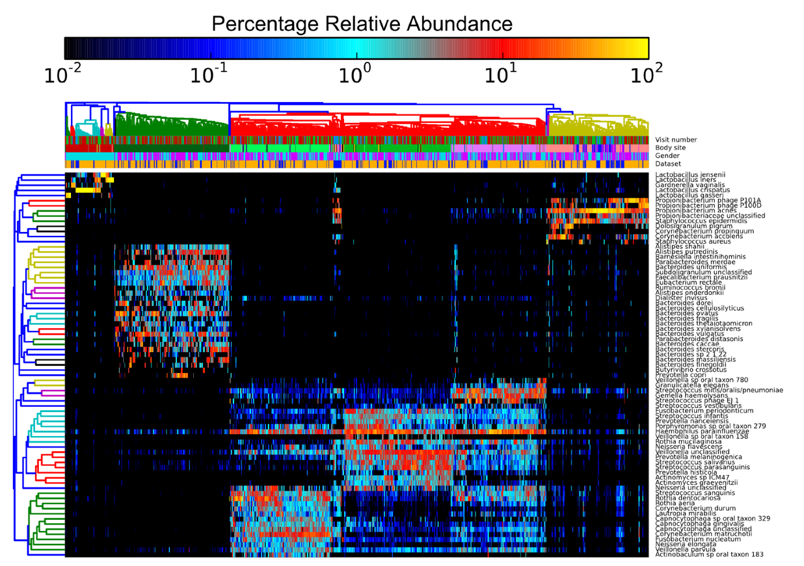
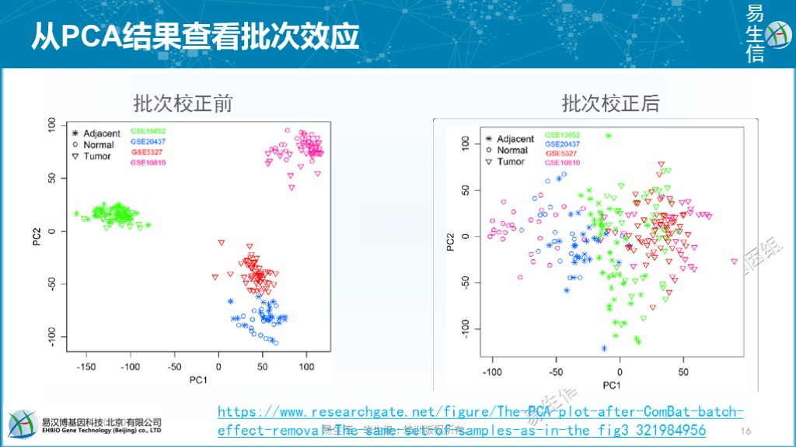
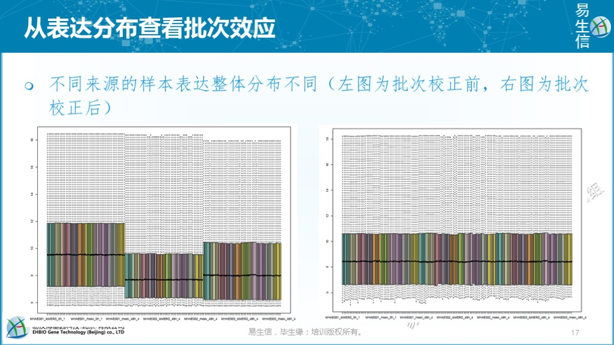
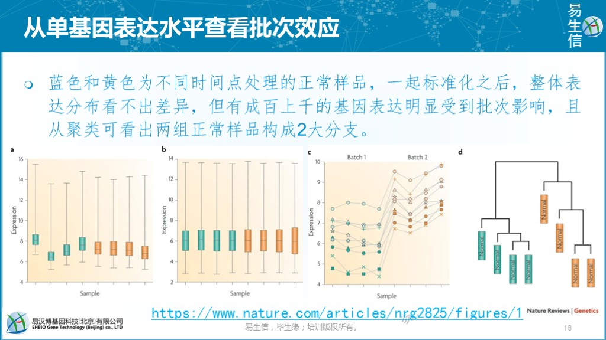
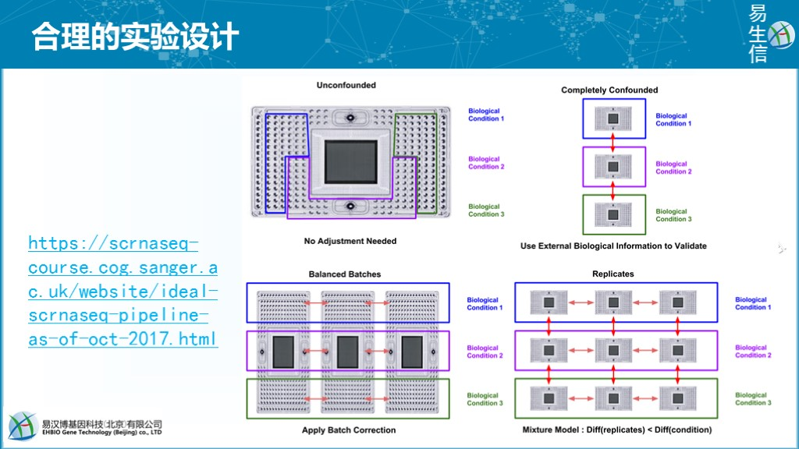
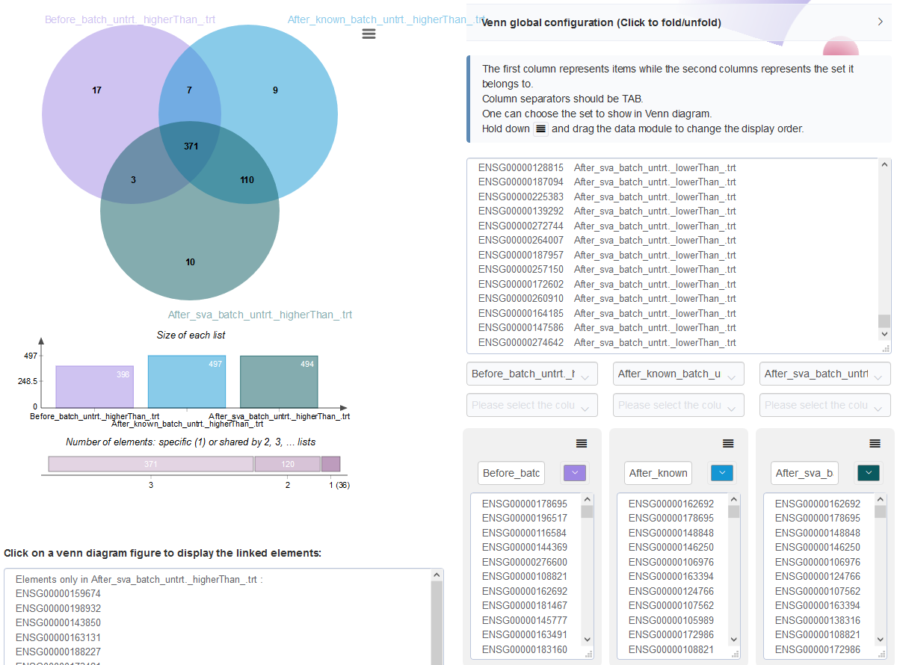

6 高通量数据中批次效应的鉴定和处理
6.1 什么是批次效应？
批次效应表示样品在不同的批次处理和测量时引入的与生物状态不相关的系统性的技术偏差。很多因素都可能导致批次效应的产生，如不同实验条件、不同操作者、不同公司的试剂、不同批的试剂、实验开展的时间、检测设备、不同的测序批次等。
6.2 批次效应会有什么影响？
2014年生信领域的大牛Michael P Snyder在PNAS上发表了一篇文章Comparison of the transcriptional landscapes between human and mouse tissues，比较了人和小鼠不同组织和器官中表达谱的异同。研究发现不同物种之间组织特异表达的基因是一致的，但很多基因在同一物种不同组织的表达相似度大于它们在不同物种同一组织的表达相似度。“我”来引申下 （原文并没有这么直接说），大体可以理解为小鼠的脑与小鼠的肾脏的相似性大于小鼠的脑与人的脑的相似性。“我”得出的这个结论是有一些颠覆认知的，如果这样，用小鼠做为模式动物是否会对人的研究给出相似性的推导？
这篇PNAS文章发出后，芝加哥大学的Yoav Gilad在F1000上发表了一篇文章A reanalysis of mouse ENCODE comparative gene expression data来讨论这个不同于以往认知的研究项目的设计和分析的合理性。
首先作者从FASTQ数据的序列名字的ID中提取出对应测序数据来源的测序仪设备ID和测序通道信息，发现所有数据来源于5个批次，如下图所示，只有最后一个批次同时包含了人和小鼠的器官，其它批次都只包含了人的器官或小鼠的器官。

重现者Yoav Gilad等通过对数据进行重分析，重现了类似于原文中的结果。不论是PCA还是Heatmap的结果，都展示出来源于同一物种的组织或器官倾向于聚类到一起。

重现者Yoav Gilad等采用ComBat移除批次带来的影响，再次绘制PCA和Heatmap，结果显示表达谱按组织类型而非物种聚在了一起。

大家有兴趣可以在https://f1000research.com/articles/4-121看看Yoav Gilad的具体操作和PNAS一作Yoav Gilad等人的讨论，通过学习双方在这段公案中辩论的出发点和落脚点，相信对数据分析也会有更多认识，这个我们后续也会涉及。
6.3 怎么确认数据有无受到批次效应影响
通过样品的层级聚类热图+样品属性信息的注释来展示样品聚类结果有无受批次效应的影响。如下面右图中可见WT_1样品在聚类分支上与其它样品处于不同的分支，而从列注释图可以看到WT_1的seqPlatform和batch信息与其它样品不同，这是给我们的一个提示可能存在批次效应影响。

通常我们在整合多套数据集进行展示时也会加上数据来源信息以展示自己的分析结果未受批次等因素影响。如下图每一列是一个样品，每一行是一个菌群；列注释中有一行为Dataset指示样品来源于 2 个数据集，并且聚类结果没有明显受到数据集来源的影响（四个大的聚类分支中样品来源分布没有明显偏好性）；

通过主成分分析PCA查看有无批次效应的影响。如下左图，样品在PC1和PC2组成的空间中按数据集而非样本类型聚在一起，表示数据来源对样本检测结果的影响超出了样本类型的影响，提示存在批次效应。如右图，批次效应移除后，在PC1轴上样品基本按正常-癌旁-肿瘤分布，表示当前样品差异的主要影响因素是样本类型。这时可以绘制样品在更多PC轴上的分布，如PC1-PC3、PC1-PC4等构成的空间中样品差异的主要因素是什么，也可以进一步判断批次效应移除的程度怎样。

通过样本整体表达分布查看有无批次影响。不同来源的样本一般是各自进行标准化（尤其是芯片数据），合并在一起后，可以简单的从整体表达分布来查看是否存在明显的偏移。如下左图存在明显的偏移，则提示有批次效应的存在。校正后，如右图，看上去样本的整体表达分布均一了。但是否批次影响就被移除了，却很难据此下结论。

通过部分基因集的表达变化查看有无批次效应影响。不同来源的数据一起标准化之后，如果标准化效果好的话，样品整体表达分布也会是均一的（如下面左数第二幅图）。但从中随机抽取数百基因却发现其表达收到了批次的影响（如下面左数第三幅图，只展示了数个基因），而且聚类结果也把两组正常样品分到了各自来源相对应的分支上。

6.4 怎么避免批次效应呢？
合理的实验设计和一致的实验操作是避免批次效应的最好方式。如下图所示如何通过合理的设计来避免检测批次带来的影响。
- 如左上角图示，若样本量数目不多，可在同一台设备（同一个芯片、同一个测序仪、同一个测序 lane）检测这是最好的方式，不存在检测批次。
- 如右上角图示，是最差的实验设计方式，不同组的样本分批检测。这种方式无法确定最终检测出的样品差异是生物差异还是设备差异还是二者共同带来的差异。这种检测方式会放大样品的差异，引入较多假阳性结果。如果只是看这种图，相信大家其实都不会这么设计。但换个角度来看，我们
5月份采一批样去测序，10月份采一批样去测序，在比较5月份样品与10月份样品差异时，我们实际的实验设计方式跟这个实验设计也没什么不同。或者做病例对照时，健康人样品好收集，一起测序；疾病样品一起搜集一起测序，也是类似的设计方式。前文所述的一段公案也类似这个设计。 - 如左下角所示，平衡设计则是最好的实验设计方式。假如实验中存在三个样品组，如
对照组、基因敲除组、基因过表达组，每组 9 个重复，则每次检测时都同时包含每组的 3 个重复，这样获得的数据则可以放在一起校正后分析。或者至少对照组的样本在每次测序中都能有2-3个重复，最后在数据校正时通过调平对照组数据的检测结果来校正其它样品的检测结果。在前文的留言中，也确实有意识比较好的老师，做了类似设计，值得学习。 - 如右下角所示，也是芯片检测基因表达的一个常规方式，每个芯片检测一个样本。不论是生物重复还是不同生物条件之间都会受到检测芯片的影响，不同重复之间的批次影响可以评估，但不同条件下的批次影响则难以评估。芯片这么检测是可以的，但测序时每个测序批次会包含很多不同类型的样品，且测序检测影响因素更多，这一设计会引入较大技术偏差。

上面也只是从检测方式的角度设计出一个合理的试验模式降低批次效应的影响，但除了检测方式，还会有很多不可控的因素也会影响到批次，如不同操作人、不同操作时间等客观因素，还有如配对设计实验中不同的个体自身也是批次的因素。
所以需要有个方式去检测和尽量降低批次效应带来的数据偏差的影响。
6.5 如何在差异基因鉴定过程中移除批次效应
在我们之前的文章DESeq2差异基因分析和批次效应移除中也提到了用如下方式构建设计矩阵，以便在差异基因分析过程中移除批次效应的影响。
ddsFullCountTable <- DESeqDataSetFromMatrix(countData = data,
colData = sample, design= ~ batch + conditions)
dds <- DESeq(ddsFullCountTable)下面我们以一个具体例子实战（配对样品处理前后基因表达的变化）和检验下效果。为了演示批次效应的影响，大部分代码做了封装，我们只关心核心的地方。如果自己对封装的代码感兴趣，可以自行查看函数源码。
6.6 检查有无缺失的包并安装，加载所有包
site = "https://mirrors.tuna.tsinghua.edu.cn/CRAN"
if (!requireNamespace("BiocManager", quietly = TRUE))
install.packages("BiocManager", repos = site)
options(BioC_mirror="https://mirrors.tuna.tsinghua.edu.cn/bioconductor")
installed_packages = data.frame(installed.packages())
a = rownames(installed_packages)
# 安装指定版本的ggbeeswarm
if (!"ggbeeswarm" %in% a){
install.packages("https://cran.r-project.org/src/contrib/Archive/ggbeeswarm/ggbeeswarm_0.6.0.tar.gz", repos = NULL, type = "source")
} else {
if (installed_packages["ggbeeswarm","Version"] != "0.6.0") {
install.packages("https://cran.r-project.org/src/contrib/Archive/ggbeeswarm/ggbeeswarm_0.6.0.tar.gz", repos = NULL, type = "source")
}
}
install_bioc <- c("tidyverse", "DESeq2", "RColorBrewer", "ggplot2", "org.Hs.eg.db",
"reshape2", "stringr", "beeswarm", "vipor", "gplots","tidyr","amap","BiocParallel","sva",
"ggfortify","patchwork", "ggrepel",
"VennDiagram","grid", "limma",
"devtools","rmarkdown","dplyr","conflicted")
for (i in install_bioc) {
if (!i %in% a){
BiocManager::install(i, update = F, site_repository=site)
a = rownames(installed.packages())
}
}
if (!"ImageGP" %in% a){
# devtools::install_github("Tong-Chen/ImageGP")
devtools::install_git("https://gitee.com/ct5869/ImageGP.git")
}# 若缺少ImageGP包，则安装
# BiocManager::install("Tong-Chen/ImageGP", update=F)
suppressMessages(library(DESeq2))
suppressMessages(library("RColorBrewer"))
suppressMessages(library("gplots"))
suppressMessages(library("amap"))
suppressMessages(library("ggplot2"))
suppressMessages(library("BiocParallel"))
suppressMessages(library("ImageGP"))
suppressMessages(library(sva))
suppressMessages(library(ggfortify))
suppressMessages(library(patchwork))
# https://cran.r-project.org/src/contrib/Archive/ggbeeswarm/ggbeeswarm_0.6.0.tar.gz
suppressMessages(library(ggbeeswarm))
suppressMessages(library(ggrepel))
suppressMessages(library(VennDiagram))
suppressMessages(library(grid))
suppressMessages(library(limma))
suppressMessages(library(dplyr))
suppressMessages(library(conflicted))
conflict_prefer("select", "dplyr")## [conflicted] Will prefer
## dplyr::select over any other package.输入文件1： reads count矩阵 (Count_matrix.txt)，格式如下：
ENSG untrt_N61311 untrt_N052611 untrt_N080611 untrt_N061011 trt_N61311 trt_N052611 trt_N080611 trt_N061011
ENSG00000223972 1 0 0 0 0 1 0 0
ENSG00000227232 13 25 23 24 12 12 22 22
ENSG00000278267 0 5 3 4 2 4 3 1输入文件2： 实验设计信息表 (metadata): conditions为处理条件（untrt是对照, trt是加药处理 ），individual标记样品的个体来源 (4个个体：N61311、N052611、N080611、N061011)。
Samp conditions individual
untrt_N61311 untrt N61311
untrt_N052611 untrt N052611
untrt_N080611 untrt N080611
untrt_N061011 untrt N061011
trt_N61311 trt N61311
trt_N052611 trt N052611
trt_N080611 trt N080611
trt_N061011 trt N0610116.7 不考虑批次因素直接进行差异基因分析
初始化，定义输入、输出和参数
# Prefix for all output file
dir.create("result/batch", recursive = T)
output_prefix = "result/batch/STAR.simpler"
# pipelineStar.sh或其它方式生成的reads count 文件，行为基因，列为样品
file = "Count_matrix.xls"
# 分组信息表
metadata = "metadata.txt"
# 分组信息所在列名字
covariate = NULL
# covariate = "batch"
design="conditions"
# 输入数据类型，salmon结果或reads count 矩阵
type="readscount"
# 差异基因参数
padj=0.05
log2FC=1数据读入和标准化
## [1] "Read in 32799 genes"
## [1] "23936 genes remained after filtering of genes with all counts less than 4 in all samples."
## [1] "Perform DESeq on given datasets."## estimating size factors## estimating dispersions## gene-wise dispersion estimates## mean-dispersion relationship## final dispersion estimates## fitting model and testing## [1] "Output normalized counts"
## [1] "Output vst transformed normalized counts"检查数据标准化效果: 标准化后基因在不同样品的表达分布越均一越好。从下图看不出存在批次效应的影响。
# normalizedExpr2DistribBoxplot(normexpr,
# saveplot=paste(output_prefix, "DESeq2.normalizedExprDistrib.pdf", sep="."))
normalizedExpr2DistribBoxplot(normexpr)
样本聚类查看样品相似性，trt组和untrt组区分明显 (聚类采用的不同基因数目、聚类参数都可能影响聚类结果)
# clusterSampleHeatmap2(normexpr$vst,
# cor_file=paste(output_prefix, "DESeq2.sampleCorrelation.txt", sep="."),
# saveplot=paste(output_prefix, "DESeq2.sampleCorrelation.pdf", sep="."))
# 根据前5000个表达变化幅度最大的基因进行聚类分析
clusterSampleHeatmap2(normexpr$vst[1:5000,], cor_file=paste(output_prefix, "DESeq2.sampleCorrelation.txt", sep="."))## [1] "Performing sample clustering"clusterSampleUpperTriPlot(normexpr$vst[1:500,], cor_file=paste(output_prefix, "DESeq2.sampleCorrelation.txt", sep="."))## [1] "Performing sample clustering"

主成分分析PCA查看样品相似性，发现在PC1轴上，样品按处理条件区分开；在PC2轴上，样品按个体区分开，不同的个体是影响样品基因表达差异的一个重要因素。
metadata = as.data.frame(colData(dds))
sp_pca(normexpr$vst[1:2000,], metadata, color_variable="conditions", shape_variable = "individual") + aes(size=1) + guides(size = "none")
先鉴定出差异基因，获得差异基因文件STAR.simpler.DESeq2.all.DE.txt和其它可视化图表（暂时忽略）。
multipleGroupDEgenes(dds, design=design, output_prefix=output_prefix, padj=padj, log2FC=log2FC, normalized_counts=normexpr)## [1] "DE genes between untrt trt"
## [1] "conditions" "untrt" "trt"## Saving 17.8 x 12.7 cm image6.8 考虑已知的批次因素进行差异基因分析
初始化，定义输入、输出和参数 （注意covariate变量使用individual列作为了批次信息）
# Prefix for all output file
dir.create("result/batch")
output_prefix = "result/batch/STAR.simpler.batch"
# pipelineStar.sh生成的reads count 文件，行为基因，列为样品
file = "Count_matrix.xls"
# 分组信息表
metadata = "metadata.txt"
# 分组信息所在列名字
# covariate = NULL
# *********
covariate = "individual"
design="conditions"
# 输入数据类型，salmon结果或reads count 矩阵
type="readscount"
# 差异基因参数
padj=0.05
log2FC=1数据读入和标准化，并检查数据标准化效果: 标准化后基因在不同样品的表达分布越均一越好 （此图略过，与上面的表达分布图一致）。
## [1] "Read in 32799 genes"
## [1] "23936 genes remained after filtering of genes with all counts less than 4 in all samples."
## [1] "Perform DESeq on given datasets."## estimating size factors## estimating dispersions## gene-wise dispersion estimates## mean-dispersion relationship## final dispersion estimates## fitting model and testing## [1] "Output normalized counts"
## [1] "Output vst transformed normalized counts"
样本聚类查看样品相似性，trt组和untrt组区分明显 (此部分结果略过，与上面的聚类结果一致)
# clusterSampleHeatmap2(normexpr$vst,
# cor_file=paste(output_prefix, "DESeq2.sampleCorrelation.txt", sep="."),
# saveplot=paste(output_prefix, "DESeq2.sampleCorrelation.pdf", sep="."))
# 根据前5000个表达变化幅度最大的基因进行聚类分析
clusterSampleHeatmap2(normexpr$vst[1:5000,], cor_file=paste(output_prefix, "DESeq2.sampleCorrelation.txt", sep="."))## [1] "Performing sample clustering"clusterSampleUpperTriPlot(normexpr$vst[1:5000,], cor_file=paste(output_prefix, "DESeq2.sampleCorrelation.txt", sep="."))## [1] "Performing sample clustering"

主成分分析PCA查看样品相似性，发现在PC1轴上，样品按处理条件区分开；在PC2轴上，样品按个体区分开，表明不同的个体可能会对后续的差异基因分析造成影响。这个结果也与我们前面不考虑批次因素的结果是一样的。
metadata = as.data.frame(colData(dds))
sp_pca(normexpr$vst[1:5000,], metadata, color_variable="conditions", shape_variable = "individual") + aes(size=1) + guides(size = "none")
是不是批次变量加错了呢，还是添加的批次变量未生效？可以说都不是，操作没问题，只是DESeq2处理时只在差异分析模型中考虑批次效应信息，而不会直接校正表达矩阵。那我们先看下加了批次后差异分析的结果怎样，后续我们再讲如何校正表达矩阵。
鉴定出差异基因，获得差异基因文件STAR.simpler.batch.DESeq2.all.DE.txt和其它可视化图表（暂时忽略）。
multipleGroupDEgenes(dds, design=design, output_prefix=output_prefix, padj=padj, log2FC=log2FC, normalized_counts=normexpr)## [1] "DE genes between untrt trt"
## [1] "conditions" "untrt" "trt"## Saving 17.8 x 12.7 cm image6.8.1 比较批次校正前后差异基因变化
校正后，差异基因数目变多了，上调多了99个，下调多了61个。不过数目变化，也说明不了太多问题。
de_before_batch = sp_readTable("result/batch/STAR.simpler.DESeq2.all.DE.txt", header=F)
de_before_batch$V2 = paste("Before_batch",de_before_batch$V2,sep="_")
table(de_before_batch$V2)##
## Before_batch_untrt._higherThan_.trt Before_batch_untrt._lowerThan_.trt
## 398 466de_after_batch = sp_readTable("result/batch/STAR.simpler.batch.DESeq2.all.DE.txt", header=F)
de_after_batch$V2 = paste("After_known_batch",de_after_batch$V2,sep="_")
table(de_after_batch$V2)##
## After_known_batch_untrt._higherThan_.trt
## 497
## After_known_batch_untrt._lowerThan_.trt
## 527画个Venn图，看下哪些基因是新增的差异基因，哪些基因批次校正后没差异了。
## V1 V2
## 1877 ENSG00000272744 After_known_batch_untrt._lowerThan_.trt
## 777 ENSG00000197594 Before_batch_untrt._lowerThan_.trt
## 701 ENSG00000162998 Before_batch_untrt._lowerThan_.trt
## 1779 ENSG00000074660 After_known_batch_untrt._lowerThan_.trt
## 1061 ENSG00000137331 After_known_batch_untrt._higherThan_.trt
## 484 ENSG00000185813 Before_batch_untrt._lowerThan_.trt# 结果存储到文件中
sp_writeTable(all_de, file="result/batch/Compare_de_gene_beofore_and_after_batch.txt", keep_rownames = F, col.names = F)sp_vennDiagram(all_de, label1="Before_batch_untrt._higherThan_.trt",
label2="After_known_batch_untrt._higherThan_.trt")
采用在线工具https://www.bic.ac.cn/Evenn/#/ 来做，准备在线工具所需的文件，一个两列格式的文件：第一列为基因名，第二列为基因的上下调状态。拷贝文件数据到网站数据输入处：

从Venn图可以看出，批次校正后既有新增的差异基因，又丢失了之前的一部分差异基因，那么哪个方式更合理呢？
选择1个批次校正后检测为上调的基因和1个批次校正后检测为下调的基因，观察下其表达模式。从下图可以看出，这些基因具有明显的个体表达一致性。ENSG00000163394基因在每个个体来源的样本中处理后表达都上调了近4倍，但是其本底表达在不同个体中却差异较大。如其在N080611个体（蓝色线）中表达整体偏低，药物处理后表达虽然有上调但表达值却低于其在N061011个体（绿色线）处理前的表达。从这两个例子可以看出，考虑到每个个体的基准表达水平不同，最终获得的差异倍数会有较高的方差。批次校正后解决了样品个体来源基因本底表达差异的影响，获得的差异基因倍数方差会变小，所以检测出更多差异基因，理论上也是更可靠的方式。（这个在之前文章典型医学设计实验GEO数据分析 (step-by-step) - Limma差异分析、火山图、功能富集也有阐述。）
ENSG00000163394 = data.frame(Expr=normexpr$vst["ENSG00000163394",])
sp_writeTable(ENSG00000163394, file="result/ENSG00000163394.txt")
p1 <- sp_boxplot(ENSG00000163394, melted=T, metadata=metadata, xvariable = "conditions", yvariable = "Expr", jitter_bp = T, group_variable_for_line = "individual", xvariable_order = c("untrt","trt"), manual_color_vector = "Set2")## [1] 1273
## [1] "#66C2A5" "#FC8D62"ENSG00000221866 = data.frame(Expr=normexpr$vst["ENSG00000221866",])
p2 <- sp_boxplot(ENSG00000221866, melted=T, metadata=metadata, xvariable = "conditions", yvariable = "Expr", jitter_bp = T, group_variable_for_line = "individual", xvariable_order = c("untrt","trt"), manual_color_vector = "Set2")## [1] 1273
## [1] "#66C2A5" "#FC8D62"
我们再选2个批次校正前鉴定为有差异、批次校正后鉴定为无差异的基因观察下其表达模式。这两个基因的表达模式没看出存在个体本底的一致变化差异。处理前后在不同个体中变化幅度不一，可能是被动变化。但这些基因一定是没有差异吗？我个人也下不出结论，后续得结合其功能再做判断了。
ENSG00000109689 = data.frame(Expr=normexpr$vst["ENSG00000109689",])
p1 <- sp_boxplot(ENSG00000109689, melted=T, metadata=metadata, xvariable = "conditions", yvariable = "Expr", jitter_bp = T, group_variable_for_line = "individual", xvariable_order = c("untrt","trt"), manual_color_vector = "Set2", title="ENSG00000109689")## [1] 1273
## [1] "#66C2A5" "#FC8D62"ENSG00000137124 = data.frame(Expr=normexpr$vst["ENSG00000137124",])
p2 <- sp_boxplot(ENSG00000137124, melted=T, metadata=metadata, xvariable = "conditions", yvariable = "Expr", jitter_bp = T, group_variable_for_line = "individual", xvariable_order = c("untrt","trt"), manual_color_vector = "Set2", title="ENSG00000137124")## [1] 1273
## [1] "#66C2A5" "#FC8D62"
DESeq2，edgeR和limma在考虑批次因素鉴定差异基因时基本操作是一致的，上面我们也完成和比较了已知批次的数据的差异基因鉴定。
后续还有2个问题：
- DESeq2不校正表达矩阵自身的值，如果需要用到批次校正后的表达矩阵怎么做？
- 如果不知道数据是否来源于同一个个体或是否有其他批次因素的影响，怎么处理？
6.9 批次效应未知时如何判断和在差异基因鉴定过程中移除批次效应
前面文章讲述了批次信息已知时，在差异基因分析中考虑批次效应的影响可以移除部分基因在个体中不同本底表达水平差异的影响，获得的差异基因倍数方差会变小，可以检测出更多差异基因，理论上也是更可靠的方式。那么如果批次信息未知或记录不完善时怎么处理呢？
这里我们就用到了另一个 R 包sva帮助从数据中预测可能存在的混杂因素包括但不限于批次效应的影响。下面我们实际看下这个包鉴定出的混杂因素与批次效应变量之间是否存在关联？利用预测出的混杂因素作为批次信息校正后结果会有什么变化？
6.9.1 预测混杂因素(cofounding factors)并在差异基因分析中移除这些因素
初始化，定义输入、输出和参数
# Prefix for all output file
output_prefix = "result/batch/STAR.simpler.sva_batch"
# pipelineStar.sh或其它方式生成的reads count 文件，行为基因，列为样品
file = "Count_matrix.xls"
# 分组信息表
metadata = "metadata.txt"
# 分组信息所在列名字
covariate = NULL
# covariate = "batch"
design="conditions"
# 输入数据类型，salmon结果或reads count 矩阵
type="readscount"
# 差异基因参数
padj=0.05
log2FC=1数据读入和标准化
## [1] "Read in 32799 genes"
## [1] "23936 genes remained after filtering of genes with all counts less than 4 in all samples."
## [1] "Perform DESeq on given datasets."## estimating size factors## estimating dispersions## gene-wise dispersion estimates## mean-dispersion relationship## final dispersion estimates## fitting model and testing## [1] "Output normalized counts"
## [1] "Output vst transformed normalized counts"6.9.2 预测可能存在的混杂因素
下面的方式也可以 (svaseq 是在 sva 的基础上对数据做了一个 log 转换；如果处理的是芯片数据，通常已经做过 log 换，直接使用 sva 即可)。
# 获取标准化后的表达矩阵
dat <- normexpr$vst
# 根据关键生物表型构建设计矩阵
mod <- model.matrix(as.formula(paste0("~ ", design)), colData(dds))
# 构建对照设计矩阵
mod0 <- model.matrix(~ 1, colData(dds))
# 指定混杂因素的数目为 2，也可以让 sva 自己预测
svseq2 <- sva(dat, mod, mod0)## Number of significant surrogate variables is: 3
## Iteration (out of 5 ):1 2 3 4 5## SV1 SV2 SV3
## [1,] -0.158515434 -0.4622145 0.32822946
## [2,] -0.013810298 -0.1806797 -0.55487160
## [3,] -0.381566045 0.4357423 0.08352428
## [4,] 0.567268826 0.1737819 0.16589595
## [5,] -0.181616074 -0.4695836 0.38642058
## [6,] 0.004300293 -0.1796549 -0.61360292
## [7,] -0.398059133 0.4960287 0.06242022
## [8,] 0.561997865 0.1865798 0.14198402添加预测出的Surrogate variable属性到dds对象
colData(dds) <- cbind(colData(dds), svs)
design(dds) <- as.formula(paste("~", paste(colnames(svs), collapse = "+"), "+", design))
# 基于预测出的混杂因素再次进行分析
dds <- DESeq(dds)## using pre-existing size factors## estimating dispersions## found already estimated dispersions, replacing these## gene-wise dispersion estimates## mean-dispersion relationship## final dispersion estimates## fitting model and testing6.9.3 可视化展示预测出的Surrogate variable属性与已知的批次信息的关系
## conditions individual sizeFactor SV1 SV2
## untrt_N61311 untrt N61311 1.0211325 -0.158515434 -0.4622145
## untrt_N052611 untrt N052611 1.1803986 -0.013810298 -0.1806797
## untrt_N080611 untrt N080611 1.1796083 -0.381566045 0.4357423
## untrt_N061011 untrt N061011 0.9232642 0.567268826 0.1737819
## trt_N61311 trt N61311 0.8939275 -0.181616074 -0.4695836
## trt_N052611 trt N052611 0.6709229 0.004300293 -0.1796549
## SV3 Sample
## untrt_N61311 0.32822946 untrt_N61311
## untrt_N052611 -0.55487160 untrt_N052611
## untrt_N080611 0.08352428 untrt_N080611
## untrt_N061011 0.16589595 untrt_N061011
## trt_N61311 0.38642058 trt_N61311
## trt_N052611 -0.61360292 trt_N052611从下图可以看出，预测出的混杂因素SV1, SV2与样品来源的个体信息 (individual)还是比较一致的。
p1 <- ggplot(plot_data, aes(x=SV1, y=SV2, color=conditions, shape=individual)) +
geom_point() + geom_text_repel(aes(label=Sample), show.legend = F)
p2 <- ggplot(plot_data, aes(x=SV1, y=SV3, color=conditions, shape=individual)) +
geom_point() + geom_text_repel(aes(label=Sample), show.legend = F)
p1+p2
6.9.4 基于预测出的混杂因素再次进行差异分析
获得差异基因文件STAR.simpler.sva_batch.DESeq2.all.DE.txt和其它可视化图表（暂时忽略）。
multipleGroupDEgenes(dds, design=design, output_prefix=output_prefix, padj=padj, log2FC=log2FC, normalized_counts=normexpr)## [1] "DE genes between untrt trt"
## [1] "conditions" "untrt" "trt"## Saving 17.8 x 12.7 cm image6.9.5 比较批次校正前、已知批次校正后和预测的批次校正后差异基因变化
根据已知批次信息校正后差异基因数目变多了，上调了99个，下调多了61个。根据预测的混杂因素校正后，上调多了96个，下调多了55个。从数目上看，根据已知批次和预测的混杂因素获得的差异基因是基本已知的。
de_before_batch = sp_readTable("result/batch/STAR.simpler.DESeq2.all.DE.txt", header=F)
de_before_batch$V2 = paste("Before_batch",de_before_batch$V2,sep="_")
table(de_before_batch$V2)##
## Before_batch_untrt._higherThan_.trt Before_batch_untrt._lowerThan_.trt
## 398 466de_after_known_batch = sp_readTable("result/batch/STAR.simpler.batch.DESeq2.all.DE.txt", header=F)
de_after_known_batch$V2 = paste("After_known_batch",de_after_known_batch$V2,sep="_")
table(de_after_known_batch$V2)##
## After_known_batch_untrt._higherThan_.trt
## 497
## After_known_batch_untrt._lowerThan_.trt
## 527de_after_sva_batch = sp_readTable("result/batch/STAR.simpler.sva_batch.DESeq2.all.DE.txt", header=F)
de_after_sva_batch$V2 = paste("After_sva_batch",de_after_sva_batch$V2,sep="_")
table(de_after_sva_batch$V2)##
## After_sva_batch_untrt._higherThan_.trt After_sva_batch_untrt._lowerThan_.trt
## 500 516画个Venn图，看下哪些基因是新增的差异基因，哪些基因批次校正后没差异了。
all_de = rbind(de_before_batch, de_after_known_batch, de_after_sva_batch)
# 随机查看6行，信息代表更全面
all_de[sample(1:nrow(all_de),6),]## V1 V2
## 1255 ENSG00000278029 After_known_batch_untrt._higherThan_.trt
## 50 ENSG00000012048 Before_batch_untrt._higherThan_.trt
## 2330 ENSG00000055813 After_sva_batch_untrt._higherThan_.trt
## 1276 ENSG00000181350 After_known_batch_untrt._higherThan_.trt
## 330 ENSG00000187634 Before_batch_untrt._higherThan_.trt
## 222 ENSG00000126785 Before_batch_untrt._higherThan_.trt# 结果存储到文件中
sp_writeTable(all_de, file="result/batch/Compare_de_gene_beofore_and_after_known_sva_batch.txt", keep_rownames = F, col.names = F)一个方式是采用代码，直接出图
suppressMessages(library(VennDiagram))
suppressMessages(library(grid))
sp_vennDiagram(all_de, label3="Before_batch_untrt._higherThan_.trt",
label1="After_known_batch_untrt._higherThan_.trt",
label2="After_sva_batch_untrt._higherThan_.trt")
这里还是采用在线工具https://www.bic.ac.cn/EVenn/#/ 来做，能直接获得每个子集的基因，准备在线工具所需的文件，一个两列格式的文件：第一列为基因名，第二列为基因的上下调状态。
拷贝文件数据到网站数据输入处 （操作就不演示了看上一篇文章）：

从untrt上调基因Venn图可以看出，校正已知批次信息后既有新增的untrt上调差异基因，又丢失了之前的一部分untrt上调差异基因；校正预测的混杂因素后，大部分新增差异基因都与已知批次信息校正后的结果一致，但新增untrt上调差异基因少。

从untrt下调基因Venn图可以看出，校正预测的混杂因素后，新增39个差异基因；批次校正前鉴定为存在差异的40个基因在校正后被认为是非差异显著基因。
下面还是从这些基因的表达模式上看是否可以找到一些线索？
下图比对绘出了7种不同类型untrt上调的差异基因中随机选取1个绘制的表达模式比较图。
untrt_up_genes <- "Name;Type
ENSG00000159674;SVA_batch_specific
ENSG00000220563;SVA_batch_uncorrect_common
ENSG00000109689;Uncorrect_specific
ENSG00000162407;Known_batch_uncorrect_common
ENSG00000184254;Known_batch_specific
ENSG00000163394;Known_batch_SVA_batch_common
ENSG00000178695;All_common"
untrt_up_genes <- read.table(text=untrt_up_genes, sep=";", header=T, row.names=NULL)
untrt_up_genes_expr <- merge(untrt_up_genes, normexpr$vst, by.x="Name", by.y=0, all.x=T)
untrt_up_genes_expr_long <- reshape2::melt(untrt_up_genes_expr, id_vars=c("Name","Type"),
variable.name="Sample", value.name = "Expr")## Using Name, Type as id variables## Name Type Sample Expr
## 1 ENSG00000109689 Uncorrect_specific untrt_N61311 10.591770
## 2 ENSG00000159674 SVA_batch_specific untrt_N61311 13.704637
## 3 ENSG00000162407 Known_batch_uncorrect_common untrt_N61311 14.753902
## 4 ENSG00000163394 Known_batch_SVA_batch_common untrt_N61311 9.829457
## 5 ENSG00000178695 All_common untrt_N61311 12.205745
## 6 ENSG00000184254 Known_batch_specific untrt_N61311 9.598665# metadata$Sample = rownames(metadata)
ImageGP:::sp_writeTable(untrt_up_genes_expr_long, file="1", keep_rownames =F)
sp_boxplot(untrt_up_genes_expr_long, melted=T, metadata=plot_data,
xvariable = "conditions", yvariable = "Expr", jitter_bp = T,
group_variable_for_line = "individual",
facet_variable = "Type", facet_scales="free_y", legend.position = c(0.7,0.15),
x_label="",manual_color_vector = "Set2") +
theme(legend.direction = "horizontal")## [1] "#66C2A5" "#FC8D62"
All_common代表了差异倍数特别大的基因，不论是否校正都可以检测出差异；不同类型批次信息校正后被检测视为差异的基因都有表达的本底差异；Uncorrect_specific的基因本底表达无固定模式。
下图比对绘出了7种不同类型untrt下调的差异基因表达分布，基本结论与上图类似。
untrt_down_genes <- "Name;Type
ENSG00000188257;SVA_batch_specific
ENSG00000117479;SVA_batch_uncorrect_common
ENSG00000137124;Uncorrect_specific
ENSG00000254109;Known_batch_uncorrect_common
ENSG00000113578;Known_batch_specific
ENSG00000221866;Known_batch_SVA_batch_common
ENSG00000152583;All_common"
untrt_down_genes <- read.table(text=untrt_down_genes, sep=";", header=T, row.names=NULL)
untrt_down_genes_expr <- merge(untrt_down_genes, normexpr$vst, by.x="Name", by.y=0, all.x=T)
untrt_down_genes_expr_long <- reshape2::melt(untrt_down_genes_expr, id_vars=c("Name","Type"),
variable.name="Sample", value.name = "Expr")## Using Name, Type as id variables## Name Type Sample Expr
## 1 ENSG00000113578 Known_batch_specific untrt_N61311 6.964600
## 2 ENSG00000117479 SVA_batch_uncorrect_common untrt_N61311 7.927545
## 3 ENSG00000137124 Uncorrect_specific untrt_N61311 8.895369
## 4 ENSG00000152583 All_common untrt_N61311 7.026723
## 5 ENSG00000188257 SVA_batch_specific untrt_N61311 6.857589
## 6 ENSG00000221866 Known_batch_SVA_batch_common untrt_N61311 7.795699metadata$Sample = rownames(metadata)
sp_boxplot(untrt_down_genes_expr_long, melted=T, metadata=plot_data,
xvariable = "conditions", yvariable = "Expr", jitter_bp = T,
group_variable_for_line = "individual",
facet_variable = "Type", facet_scales="free_y", legend.position = c(0.7,0.15),
x_label="",manual_color_vector = "Set2") +
theme(legend.direction = "horizontal")## [1] "#66C2A5" "#FC8D62"
额外的一个信息是SVA_batch_speific中红色和绿色个体本底表达区分不明显。这可能是基于SVA预测的混杂因素与已知的批次因素校正后结果有差异的一个原因 (这两个个体的SV值很接近)。
另外一个导致SVA预测的批次与已知的批次效应校正后结果不同的原因也可能是我们只让SVA预测了2个混杂因素。留下2个去探索的问题，欢迎留言或投稿讨论：
- 如果不设置只返回两个混杂因素，实际SVA会判断出存在3个混杂因素，全部混杂因素都考虑进去结果会有什么变化呢？
- 上面是取了单个基因查看其表达模式，还可以进一步比较不同子集的基因表达水平、差异倍数、FDR、差异倍数方差的整体分布，分析受影响的主要是哪些类型的基因？
6.10 直接校正表达矩阵
处理批次因素最好的方式还是如前面所述将其整合到差异基因鉴定模型中，降低批次因素带来的模型残差的自由度。但一些下游分析，比如数据可视化，也需要直接移除效应影响的数据来展示，这时可以使用ComBat或removeBatchEffect函数来处理。
输入数据，标准化且log转换后的数据 STAR.simpler.DESeq2.normalized.vst.txt
id untrt_N61311 untrt_N052611 untrt_N080611 untrt_N061011 trt_N61311 trt_N052611 trt_N080611 trt_N061011
ENSG00000115414 18.02 18.62 17.83 18.45 17.95 18.54 18.15 18.50
ENSG00000011465 17.79 18.36 17.96 18.52 17.79 18.23 17.84 18.47
ENSG00000091986 17.15 17.74 16.41 17.59 17.27 17.79 16.88 17.76
ENSG00000103888 15.56 16.90 15.88 16.42 15.94 17.43 17.38 17.05 包含已知批次信息和预测的批次信息的样本属性文件 metadata2
Samp conditions individual sizeFactor SV1 SV2 SV3
untrt_N61311 untrt N61311 1.0211325 -0.10060313 -0.4943517 -0.31643389
untrt_N052611 untrt N052611 1.1803986 0.01827734 -0.1701068 0.58841464
untrt_N080611 untrt N080611 1.1796083 -0.42949195 0.3756338 -0.08929556
untrt_N061011 untrt N061011 0.9232642 0.53452392 0.2413738 -0.17649091
trt_N61311 trt N61311 0.8939275 -0.12535603 -0.4956603 -0.36550102
trt_N052611 trt N052611 0.6709229 0.03588273 -0.151201 0.5914179
trt_N080611 trt N080611 1.3967665 -0.46668403 0.4413431 -0.07016903
trt_N061011 trt N061011 0.9462307 0.53345114 0.2529692 -0.161942136.10.1 读入标准化后的表达矩阵和样品信息表
expr_File <- "result/batch/STAR.simpler.DESeq2.normalized.vst.txt"
expr_mat <- sp_readTable(expr_File, row.names=1)
head(expr_mat)## untrt_N61311 untrt_N052611 untrt_N080611 untrt_N061011
## ENSG00000096060 8.377527 8.647174 9.193881 7.929484
## ENSG00000109906 5.835168 5.852500 5.601434 6.188280
## ENSG00000211445 9.931563 11.412991 10.507340 10.939324
## ENSG00000112936 8.351378 8.341983 9.781321 8.241310
## ENSG00000152583 7.026723 7.284537 7.285092 7.309670
## ENSG00000101347 10.705358 10.857668 10.479317 10.892392
## trt_N61311 trt_N052611 trt_N080611 trt_N061011
## ENSG00000096060 12.353764 12.508120 11.965273 12.10153
## ENSG00000109906 9.797577 9.461018 8.932876 10.26135
## ENSG00000211445 14.101096 15.127159 13.509829 14.68201
## ENSG00000112936 12.421820 10.489734 12.339928 11.14178
## ENSG00000152583 11.194267 10.831855 10.498043 11.18172
## ENSG00000101347 14.221389 14.836149 13.630472 15.04158metadata <- "result/batch/metadata2.txt"
metadata <- sp_readTable(metadata, row.names=1)
head(metadata)## conditions individual sizeFactor SV1 SV2
## untrt_N61311 untrt N61311 1.0211325 -0.158515434 -0.4622145
## untrt_N052611 untrt N052611 1.1803986 -0.013810298 -0.1806797
## untrt_N080611 untrt N080611 1.1796083 -0.381566045 0.4357423
## untrt_N061011 untrt N061011 0.9232642 0.567268826 0.1737819
## trt_N61311 trt N61311 0.8939275 -0.181616074 -0.4695836
## trt_N052611 trt N052611 0.6709229 0.004300293 -0.1796549
## SV3 Sample
## untrt_N61311 0.32822946 untrt_N61311
## untrt_N052611 -0.55487160 untrt_N052611
## untrt_N080611 0.08352428 untrt_N080611
## untrt_N061011 0.16589595 untrt_N061011
## trt_N61311 0.38642058 trt_N61311
## trt_N052611 -0.61360292 trt_N0526116.10.2 使用ComBat校正
ComBat校正时考虑生物分组信息
biological_group = "conditions"
batch = "individual"
metadata[[biological_group]] <- factor(metadata[[biological_group]])
metadata[[batch]] <- factor(metadata[[batch]])
# 模型中引入关注的生物变量和其它非批次变量，保留生物差异和非批次差异
modcombat = model.matrix(as.formula(paste('~', biological_group, sep=" ")), data=
metadata)
# ComBat需要的是matrix
expr_mat_batch_correct <- ComBat(dat=as.matrix(expr_mat), batch=metadata[[batch]], mod=modcombat)## Found 2538 genes with uniform expression within a single batch (all zeros); these will not be adjusted for batch.## Found4batches## Adjusting for1covariate(s) or covariate level(s)## Standardizing Data across genes## Fitting L/S model and finding priors## Finding parametric adjustments## Adjusting the Data## untrt_N61311 untrt_N052611 untrt_N080611 untrt_N061011
## ENSG00000096060 8.417951 8.481407 8.847812 8.318834
## ENSG00000109906 5.784193 5.918108 5.987956 5.773905
## ENSG00000211445 10.478496 10.723636 10.890187 10.6762466.10.2.1 校正后的PCA
PCA结果显示在PC1轴代表的差异变大了，PC2轴代表的差异变小了，不同来源的样本在PC2轴的分布没有规律了 (或者说成镜像分布了)。
sp_pca(expr_mat_batch_correct[1:5000,], metadata,
color_variable="conditions", shape_variable = "individual") +
aes(size=1) + guides(size = "none")
ComBat校正时不考虑分组信息，也可以获得一个合理的结果，但是一部分组间差异被抹去了。
# ComBat需要的是matrix
expr_mat_batch_correct2 <- ComBat(dat=as.matrix(expr_mat), batch=metadata[[batch]], mod=NULL)## Found 2538 genes with uniform expression within a single batch (all zeros); these will not be adjusted for batch.## Found4batches## Adjusting for0covariate(s) or covariate level(s)## Standardizing Data across genes## Fitting L/S model and finding priors## Finding parametric adjustments## Adjusting the Dataexpr_mat_batch_correct2 <- as.data.frame(expr_mat_batch_correct2)
sp_pca(expr_mat_batch_correct2[1:5000,], metadata,
color_variable="conditions", shape_variable = "individual") +
aes(size=1) + guides(size = "none") 
关于运行ComBat时是否应该添加关注的生物分组信息，即mod变量，存在一些争议。反对添加mod的人的担心是这么处理后，是否会强化生物分组之间的差异。支持添加mod的人是担心如果不添加mod那么去除批次时可能也会去除样本组之间的差异，尤其是实验设计不合理时。
如果是非平衡实验，类似我们在实验设计部分时提到的方案2，则没有办法添加mod变量，程序会报出Design matrix is not full rank类似的错误，这时是不能区分差异是来源于批次还是来源于样本，强行移除批次时，也会移除一部分或者全部样本分组带来的差异。这个在第一篇帖子处有两位朋友的留言讨论可以参考。
ComBat只能处理批次信息为l离散型分组变量的数据，不能处理sva预测出的连续性混杂因素。
6.10.3 使用limma校正
如果批次信息有多个或者不是分组变量而是类似SVA预测出的数值混杂因素，则需使用limma的removeBatchEffect (这里使用的是SVA预测出的全部3个混杂因素进行的校正。)。
样品在PC1和PC2组成的空间的分布与ComBat结果类似，只是PC1能解释的差异略小一些。
SV = metadata[,c("SV1","SV2","SV3")]
expr_mat_batch_correct_limma1 <- removeBatchEffect(expr_mat, covariates = SV, design=modcombat)
sp_pca(expr_mat_batch_correct_limma1[1:5000,], metadata,
color_variable="conditions", shape_variable = "individual") +
aes(size=1) + guides(size = "none") 
removeBatchEffect运行时也可以不提供生物分组信息。
expr_mat_batch_correct_limma1 <- removeBatchEffect(expr_mat, covariates = SV)
sp_pca(expr_mat_batch_correct_limma1[1:5000,], metadata,
color_variable="conditions", shape_variable = "individual") +
aes(size=1) + guides(size = "none") 
removeBatchEffect也可以跟ComBat一样，对给定的已知一个或多个定性批次信息进行校正。
expr_mat_batch_correct_limma2 <- removeBatchEffect(expr_mat, batch=metadata[[batch]], design=modcombat)
sp_pca(expr_mat_batch_correct_limma2[1:5000,], metadata,
color_variable="conditions", shape_variable = "individual") +
aes(size=1) + guides(size = "none") 
不指定目标分组变量，结果也不受影响。
expr_mat_batch_correct_limma2 <- removeBatchEffect(expr_mat, batch=metadata[[batch]])
sp_pca(expr_mat_batch_correct_limma2[1:5000,], metadata,
color_variable="conditions", shape_variable = "individual") +
aes(size=1) + guides(size = "none") 
6.10.4 查看校正完后基因的表达情况
untrt_down_genes <- "Name;Type
ENSG00000144649;SVA_batch_specific
ENSG00000187134;SVA_batch_uncorrect_common
ENSG00000137124;Uncorrect_specific
ENSG00000151690;Known_batch_uncorrect_common
ENSG00000180914;Known_batch_specific
ENSG00000221866;Known_batch_SVA_batch_common
ENSG00000152583;All_common"
untrt_down_genes <- read.table(text=untrt_down_genes, sep=";", header=T, row.names=NULL)
untrt_down_genes_expr <- merge(untrt_down_genes, expr_mat_batch_correct, by.x="Name", by.y=0, all.x=T)
untrt_down_genes_expr_long <- reshape2::melt(untrt_down_genes_expr, id_vars=c("Name","Type"),
variable.name="Sample", value.name = "Expr")## Using Name, Type as id variables## Name Type Sample Expr
## 1 ENSG00000137124 Uncorrect_specific untrt_N61311 9.005546
## 2 ENSG00000144649 SVA_batch_specific untrt_N61311 7.067120
## 3 ENSG00000151690 Known_batch_uncorrect_common untrt_N61311 9.464342
## 4 ENSG00000152583 All_common untrt_N61311 7.057427
## 5 ENSG00000180914 Known_batch_specific untrt_N61311 8.081169
## 6 ENSG00000187134 SVA_batch_uncorrect_common untrt_N61311 12.356100#metadata$Sample = rownames(metadata)
sp_boxplot(untrt_down_genes_expr_long, melted=T, metadata=plot_data,
xvariable = "conditions", yvariable = "Expr", jitter_bp = T,
group_variable_for_line = "individual",
facet_variable = "Type", facet_scales="free_y", legend.position = c(0.7,0.1),
x_label="",manual_color_vector = "Set2") +
theme(legend.direction = "horizontal")## [1] "#66C2A5" "#FC8D62"
untrt_down_genes <- "Name;Type
ENSG00000144649;SVA_batch_specific
ENSG00000187134;SVA_batch_uncorrect_common
ENSG00000137124;Uncorrect_specific
ENSG00000151690;Known_batch_uncorrect_common
ENSG00000180914;Known_batch_specific
ENSG00000221866;Known_batch_SVA_batch_common
ENSG00000152583;All_common"
untrt_down_genes <- read.table(text=untrt_down_genes, sep=";", header=T, row.names=NULL)
untrt_down_genes_expr <- merge(untrt_down_genes, expr_mat_batch_correct_limma1, by.x="Name", by.y=0, all.x=T)
untrt_down_genes_expr_long <- reshape2::melt(untrt_down_genes_expr, id_vars=c("Name","Type"),
variable.name="Sample", value.name = "Expr")## Using Name, Type as id variables## Name Type Sample Expr
## 1 ENSG00000137124 Uncorrect_specific untrt_N61311 9.021158
## 2 ENSG00000144649 SVA_batch_specific untrt_N61311 6.991157
## 3 ENSG00000151690 Known_batch_uncorrect_common untrt_N61311 9.527425
## 4 ENSG00000152583 All_common untrt_N61311 7.054087
## 5 ENSG00000180914 Known_batch_specific untrt_N61311 8.214962
## 6 ENSG00000187134 SVA_batch_uncorrect_common untrt_N61311 12.282890# metadata$Sample = rownames(metadata)
sp_boxplot(untrt_down_genes_expr_long, melted=T, metadata=plot_data,
xvariable = "conditions", yvariable = "Expr", jitter_bp = T,
group_variable_for_line = "individual",
facet_variable = "Type", facet_scales="free_y", legend.position = c(0.7,0.1),
x_label="",manual_color_vector = "Set2") +
theme(legend.direction = "horizontal")## [1] "#66C2A5" "#FC8D62"